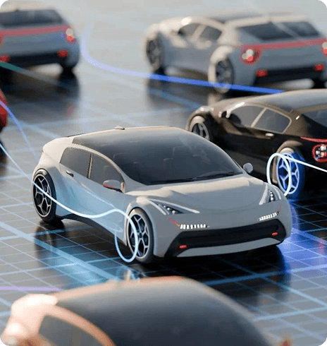

V2M introduces first original report on the evolving landscape of Artificial Intelligence (AI) in the automotive sector. Divided into five sections, each containing detailed subsections, we explore the current state and future trends of AI technology adoption in the automotive sector.
This report offers valuable insights into the transformative role of AI in shaping the future of automotive technology. Join us as we navigate through the intricate intersection of artificial intelligence and the automotive industry, uncovering key trends, challenges, and opportunities along the way.
